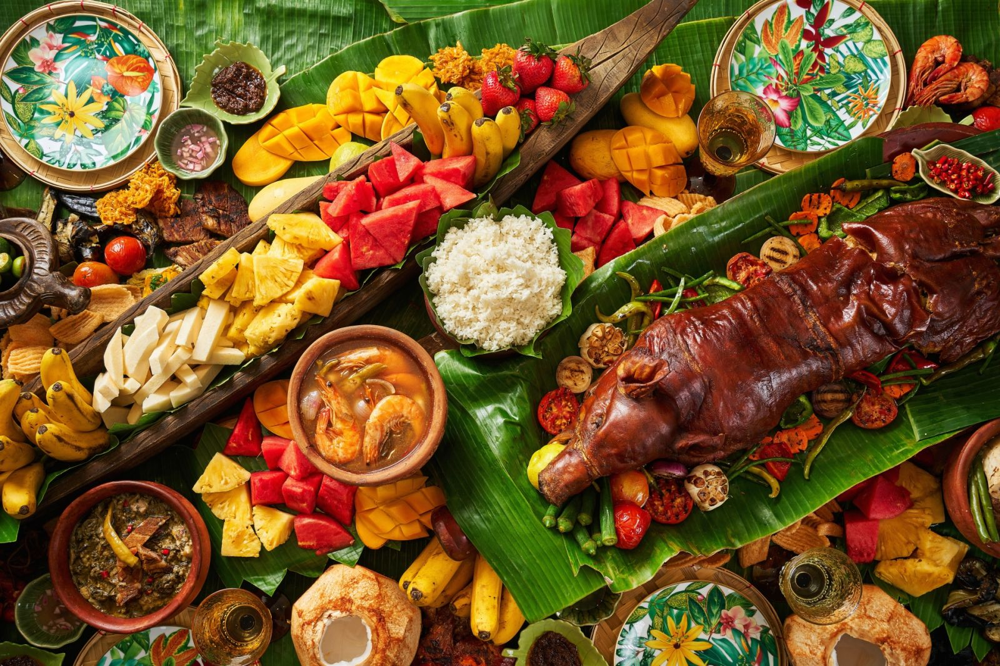

Password reset isn't available.
This static version of Kain Tayo! can't send password-reset emails. You can still explore Filipino dishes without signing in.
Password recovery is unavailable here. Please don't enter your email address.
Browse Filipino Foods